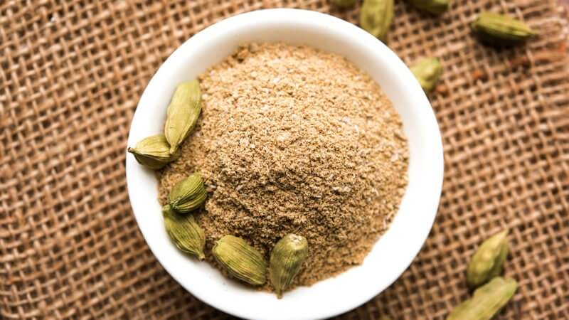
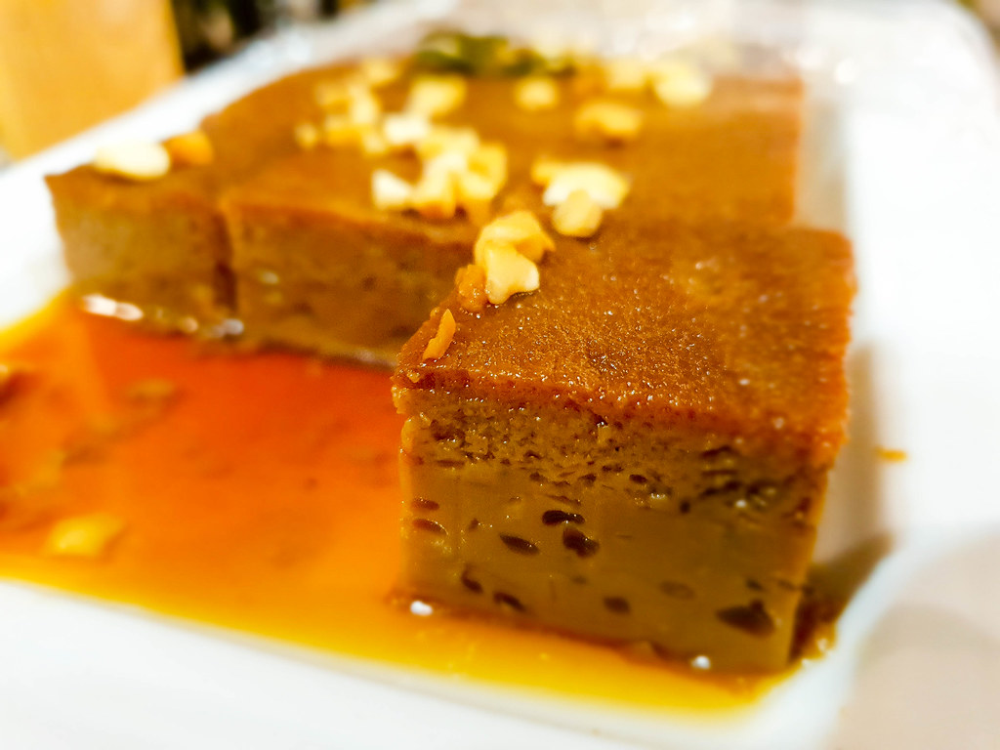

Watalappan
Ingrediants:

1 cup coconut milk

1 cup palm sugar (or brown sugar)

4 eggs

1/4 teaspoon ground cardamom

1 tablespoon rose water (optional)

Cashew nuts or almonds for garnish (optional)
Instructions:
1. Preheat your oven to 350°F (175°C).
2. In a saucepan, heat the coconut milk and palm sugar together over low
heat until the sugar dissolves. Let it cool slightly.
3. In a mixing bowl, beat the eggs and gradually add the cooled coconut
milk mixture while stirring continuously.
4. Add the cardamom, nutmeg, and rose water to the mixture and combine
well.
5. Strain the mixture through a fine sieve or cheesecloth to remove any
lumps.
6. Pour the strained mixture into individual ramekins or a baking dish.
7. Place the ramekins or dish in a larger baking pan filled halfway with
hot water (this creates a water bath).
8. Bake in the preheated oven for about 30-40 minutes or until the top is
set but slightly wobbly.
9. Once done, remove from the oven and let it cool.
10. Refrigerate for a few hours or overnight before serving.
11. Optionally, garnish with toasted cashew nuts or almonds before
serving.
Enjoy your homemade Watalappan!
